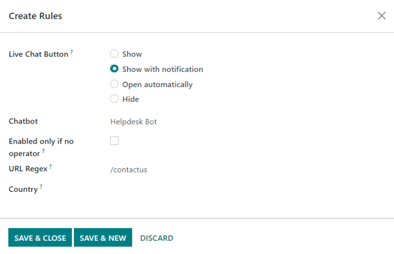

Empezar a recibir tickets¶
La aplicación Servicio de asistencia de Odoo ofrece varios canales que los clientes pueden contactar para recibir ayuda, como correos electrónico, chat en vivo o un formulario de envío en el sitio web. Estas opciones de contacto proporciona varias oportunidades a los clientes para que reciban soporte con rapidez, además de que permite que el equipo de soporte pueda gestionar tickets de soporte multicanal desde una sola ubicación central.
Habilitar las opciones de canales para enviar tickets¶
Vaya a y elija un equipo existente o haga clic en nuevo para crear un nuevo equipo.
En la página de ajustes del equipo, diríjase a canales. Seleccione las casillas de los canales que desea habilitar.
Seudónimo de correo electrónico
Formulario de sitio web
Chat en vivo
Seudónimo de correo electrónico¶
La opción seudónimo de correo electrónico crea tickets de forma automática a partir de mensajes que recibe esta dirección de correo.
Para cambiar el seudónimo de correo de un equipo del servicio de asistencia, vaya a la página equipos en los ajustes. Ahí encontrará la opción seudónimo de correo electrónico en la sección canales, escriba el seudónimo de correo electrónico para el equipo en el campo correspondiente.
Al crear un nuevo equipo de servicio de asistencia, también crea un seudónimo de correo electrónico. Puede cambiarlo en el campo seudónimo.
Nota
Si la base de datos no tiene un dominio personalizado, haga clic en configurar un dominio personalizado para ir a la página de ajustes. Ahí, habilite la opción servidores de correo electrónico personalizados.
Cuando recibe un correo electrónico, la línea de asunto del mensaje se convierte en el título de un nuevo ticket de Servicio de asistencia y el contenido se agrega al ticket en la pestaña descripción y en el chatter del ticket.
Importante
Los pasos de configuración que se mencionan arriba son para las bases de datos de Odoo en línea y Odoo.sh. Para las bases de datos con alojamiento local debe realizar configuraciones adicionales para los servidores de correo electrónico personalizados y seudónimos de correo.
Formulario de sitio web¶
Habilitar el ajuste formulario de sitio web agrega una nueva página al sitio web que incluye un formulario personalizable. Al completar y enviar el formulario, se crea un nuevo ticket.
Para activar el formulario del sitio web, vaya a la página de ajustes de un equipo en . Encontrará la función formulario de sitio web en la sección canales. Seleccione la casilla.
Después de activar la función, haga clic en el botón inteligente Ir al sitio web en la parte superior de la página de ajustes Equipos para ver y editar el formulario de sitio web, el cual Odoo crea de manera automática.
Nota
Luego de habilitar el formulario de sitio web, quizá necesite actualizar la página de ajustes de equipos para que aparezca el botón inteligente Ir al sitio web.
Además, si publica un centro de ayuda, el botón inteligente le llevará ahí primero. Solo haga clic en el botón contáctenos al final de la página del foro para ir al formulario de envío de tickets.

Personalizar el formulario de tickets en el sitio web¶
Para personalizar el formulario predeterminado de envío de tickets, haga clic en el botón Editar en la esquina superior derecha de la página y después haga clic en alguno de los campos del formulario.
Puede agregar, eliminar o actualizar campos como sea necesario para elegir qué información deben enviar los clientes. Puede marcar los campos como obligatorios al cambiar el botón interruptor de gris a azul en la ventana de edición del creador de sitios web, el cual se ubica bajo la sección campo. Además, puede editar otra información relevante aquí, como:
Tipo: hace que el valor de un modelo de Odoo coincida con el campo (por ejemplo,
nombre de cliente).Tipo de contenido: para determinar qué tipo de campo debería ser, como
texto,correo electrónico,teléfonooURL.Etiqueta: para asignar una etiqueta al campo del formulario (por ejemplo,
nombre completo,dirección de correo electrónico, etc.). También puede editar la posición de la etiqueta en el formulario mediante las opciones anidadas de posición.Descripción: es opcional, agrega una línea editable bajo el cuadro de entrada para proporcionar información contextual adicional relacionada con el campo.
Marcador de posición: para agregar un valor de entrada como ejemplo.
Valor predeterminado: para agregar valores de caso de uso comunes que serían útiles para la mayoría de los clientes.
Obligatorio: el cual establece el campo como obligatorio para enviar el formulario.
Visibildad: para permitir la visibilidad total o condicional del campo. Las opciones anidadas, como visibilidad del dispositivo, aparecen cuando se seleccionan opciones determinadas.
Truco
Puede agregar bloques de texto en la columna más lejana de la página de formulario de ticket, junto al formulario del ticket. Este es el lugar ideal para incluir información del equipo, como detalles de contacto adicionales, horarios o artículos útiles vinculados con el foro.

Una vez que haya optimizado el formulario y esté listo para uso público, guarde los cambios y publique el formulario mediante el botón sin publicar.
Chat en vivo¶
La función chat en vivo permite que los visitantes del sitio web contacten directamente a un agente de soporte o a un bot de chat. En estas conversaciones se pueden crear tickets de Servicio de asistencia de forma instantánea mediante el comando de respuesta /helpdesk.
Para habilitar el chat en vivo, vaya a y, en la vista de lista, seleccione un equipo. En la página de ajustes de equipos haga clic en la casilla junto a chat en vivo, en la sección canales.
Nota
Si es la primera vez que se habilita la función chat en vivo en la base de datos, puede que deba guardar la página de forma manual y actualizar antes de continuar con los siguientes pasos.
Con el chat en vivo activado, haga clic en ver canales. Luego, en el tablero de canales de chat en vivo del sitio web, seleccione la tarjeta de kanban del canal que se creó para el equipo de servicio de asistencia o cree uno nuevo si es necesario. Al seleccionar una tarjeta de kanban se agregan opciones adicionales al formulario del canal.
Personalizar el canal de chat en vivo¶
Cuando se hace clic en un canal individual en el tablero de canales de chat en vivo del sitio web, Odoo redirecciona la página al formulario del canal. Ahí puede editar el nombre del canal; sin embargo, Odoo selecciona el nombre para que coincida con el flujo de kanban del equipo de servicio de asistencia de forma predeterminada.
Example
Si un equipo de servicio de asistencia tiene el nombre atención al cliente, se creará un canal de chat en vivo con el mismo nombre.
En el formulario del canal, revise las pestañas para completar la configuración.
Agregar operadores¶
Los operadores son los usuarios que operan como agentes y responden las solicitudes de chat en vivo de los clientes. El usuario que originalmente creó el canal de chat en vivo se agregará de forma predeterminada.
Para agregar usuarios adicionales, haga clic en el canal de chat en vivo en el tablero de canales de chat en vivo del sitio web y, en la pestaña operadores, haga clic en AGREGAR.
Luego, haga clic en la casilla junto a los usuarios que desea agregar y haga clic en SELECCIONAR. También puede crear nuevos operadores y agregarlos a la lista al completar el formulario crear operadores y hacer clic en guardar y cerrar (o guardar y crear nuevo en caso de crear varios registros).
Además, puede editar o eliminar los operadores actuales al hacer clic en sus respectivas casillas en la pestaña operadores y ajustar los valores en su formulario, o al hacer clic en uno de los botones de formulario que se ubican al final del formulario, como eliminar.
Truco
Los usuarios se pueden agregar a si mismos como operadores al hacer clic en el botón unirse de un canal de chat en vivo.
Modificar las opciones del canal¶
La pestaña opciones contiene los ajustes visuales y de texto de la ventana de chat en vivo.
Cambie el texto en el campo texto del botón para actualizar el saludo que se muestra en la burbuja de texto cuando el botón de chat en vivo aparece en el sitio web.
Edite el mensaje de bienvenida para cambiar el mensaje que recibe un visitante al abrir la ventana de chat. Este mensaje aparecerá como si hubiera sido enviado por un operador y debe ser una invitación a continuar la conversación.
Edite el marcador de posición de entrada de chat para cambiar el texto que aparece en el recuadro cuando los visitantes escriben sus respuestas.
Cambie el color del botón del chat en vivo y el color del encabezado del canal al hacer clic en una burbuja de color para abrir la ventana de selección de color. Haga clic en el icono de actualizar que aparece a la derecha de las burbujas de color para restablecer los colores a la selección predeterminada.
Truco
Puede seleccionar un color, ya sea para el botón o para el encabezado, de forma manual o mediante la selección de código RGB, HSL o HEX. Hay distintas opciones disponibles dependiendo de su sistema operativo.
Crear reglas de canal¶
La pestaña reglas del canal determina cuando el sitio web abre la ventana de chat en vivo mediante la lógica al activar una acción de Regex de URL (por ejemplo, una visita a la página).
Edite las reglas existentes o cree una nueva al hacer clic en agregar una línea y complete el formulario emergente según la manera en la que se deben aplicar las reglas.
Seleccione en el menú desplegable si incluirá un bot de chat en este canal. Si el bot de chat solo estará activo cuando no haya operadores disponibles, seleccione la casilla denominada habilitado solo si no hay un operador.
Nota
Si agrega un bot de chat al canal de chat en vivo, aparecerán 3 nuevos botones inteligentes en el formulario de ajustes del canal: bots de chat, sesiones y % de satisfacción.
El botón inteligente bots de chat es donde puede programar el bot de chat con un guión. Cada línea en el guión contiene un mensaje, tipo de paso, respuestas y una lógica condicional Solo sí que se aplica cuando se eligen respuestas precompletadas determinadas. Para crear más pasos en el guión, haga clic en agregar una línea y complete los pasos del guión según la lógica deseada.
Sesiones es donde se registran las sesiones de chat en vivo en orden descendente de fecha de sesión de forma predeterminada. Cada registro incluye los asistentes que participaron en la sesión de chat en vivo, el número de mensajes, así como cualquier calificación recibida al final de la sesión.
El botón inteligente % de satisfacción incluye un registro de las calificaciones que dejaron los asistentes del chat en directo. Están etiquetadas por fecha, hora y agente de soporte responsable de la sesión de chat en vivo.
Agregue la URL de las páginas a las que se aplicará este canal en el campo regex de URL. Si este canal solo estará disponible para los usuarios en ciertos países, agréguelos al campo país. Si deja este campo en blanco, el canal estará disponible para todos los visitantes del sitio.
Usar el widget de chat en vivo¶
La pestaña widget en el formulario del canal de chat en vivo ofrece un widget de sitio web que se puede insertar en el sitio, o un código corto para que el cliente o proveedor acceda de forma instantánea a la ventana de chat en vivo.
El widget de chat en vivo se puede aplicar a sitios web creados mediante Odoo en . Luego baje a la sección chat en vivo y seleccione el canal a agregar en el sitio. Haga clic en guardar para aplicar.
Para agregar el widget a un sitio web que se creó en una plataforma externa, haga clic en copiar y pegue el código en la etiqueta <head> del sitio.
Del mismo modo, para enviar una sesión de chat en vivo a un cliente o proveedor, haga clic en el segundo botón copiar, este incluye un enlace para unirse directamente.
Crear un ticket de soporte a partir de una sesión de chat en vivo¶
Una vez que habilita el chat en vivo, los operadores podrán comunicarse con los visitantes del sitio web en tiempo real.
Durante la conversación, el operador puede utilizar el comando de atajo /helpdesk para crear un ticket sin abandonar la ventana de chat. La transcripción de la conversación se agregará al nuevo ticket, en la pestaña descripción.
Priorizar tickets¶
Todos los tickets incluyen un campo de prioridad. Los tickets con mayor prioridad aparecerán en la parte superior de las vistas de kanban y de lista.
Los niveles de prioridad se representan con estrellas:
0 estrellas = prioridad baja
1 estrella = prioridad media
2 estrellas = prioridad alta
3 estrellas = urgente
Los tickets reciben la prioridad más baja (0 estrellas) de forma predeterminada. Para cambiar el nivel de prioridad, seleccione el número de estrellas correspondiente en la tarjeta de kanban o en el ticket.
Advertencia
Dado que los niveles de prioridad se pueden utilizar como criterio para asignar acuerdos de nivel de servicio, cambiar el nivel de prioridad de un ticket puede alterar la fecha límite del acuerdo de nivel de servicio.